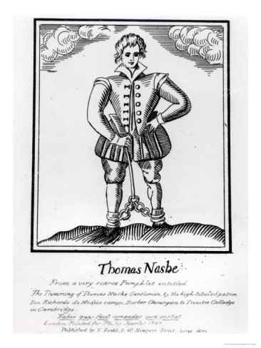

Sunday, July the 14th, 2013
back to: title, date or indexes
So eminently quotable is Thomas Nashe that I have decided to post a passage from his Lenten Stuff every day while I am reading it—The Daily Nashe, if you will. The Stuff is, among other things, a paean of praise to Great Yarmouth—though it appears he was sorely tempted to go further afield:
I had a crotchet in my head here to have given the reins to my pen, and run astray throughout all the coast towns of England, digging up their dilapidations and raking out of the dust-heap or charnel-house of tenebrous eld the rottenest relic of their monuments, and bright scoured the canker-eaten brass of their first bricklayers and founders, & commented and paralogized on their condition in the present, & in the preter tense, not for any love or hatred I bear them, but that I would not be snibbed, or have it cast in my dish that therefore I praise Yarmouth so rantantingly because I never elsewhere baited my horse, or took my bow and arrows and went to bed.

Hooting Yard on the Air, June the 18th, 2013 : “On Buttons Versus Toggles” (starts around 16:40)